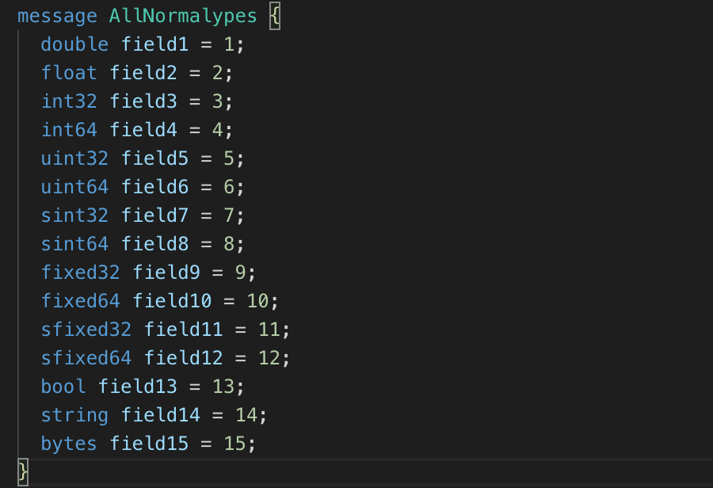
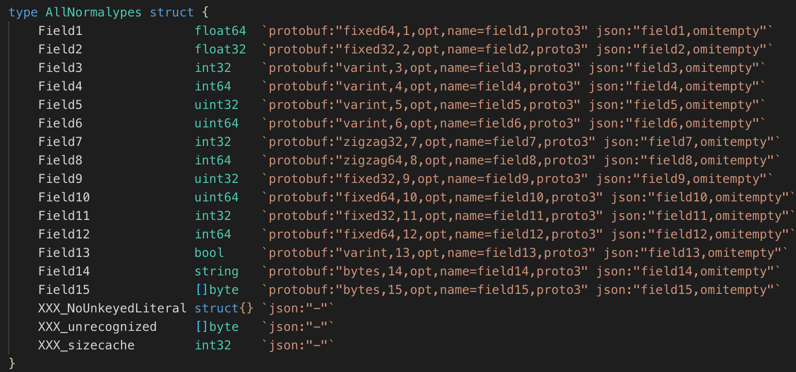
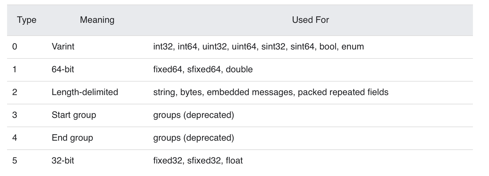
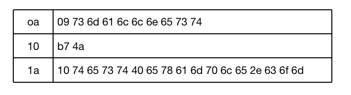
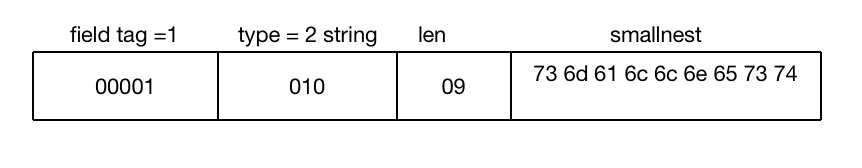
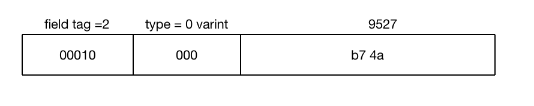
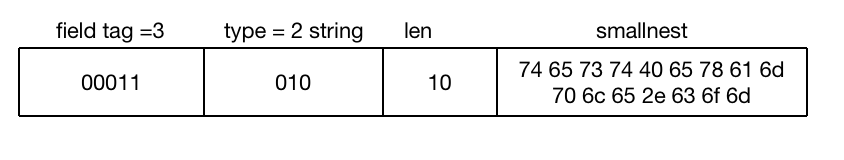

目录 [−]
Protocol Buffer (简称Protobuf) 是Google出品的性能优异、跨语言、跨平台的序列化库。
历史
2001年初，Protobuf首先在Google内部创建， 我们把它称之为 proto1，一直以来在Google的内部使用，其中也不断的演化，根据使用者的需求也添加很多新的功能，一些内部库依赖它。几乎每个Google的开发者都会使用到它。
Google开始开源它的内部项目时，因为依赖的关系，所以他们决定首先把Protobuf开源出去。 proto1在演化的过程中有些混乱，所以Protobuf的开发者重写了Protobuf的实现，保留了proto1的大部分设计，以及proto1的很多的想法。但是开源的proto2不依赖任何的Google的库，代码也相当的清晰。2008年7月7日，Protobuf开始公布出来。
Protobuf公布出来也得到了大家的广泛的关注， 逐步地也得到了大家的认可，很多项目也采用Protobuf进行消息的通讯，还有基于Protobuf的微服务框架GRPC。在使用的过程中，大家也提出了很多的意见和建议，Protobuf也在演化，于2016年推出了Proto3。 Proto3简化了proto2的开发，提高了开发的效能，但是也带来了版本不兼容的问题。
目前Protobuf的稳定版本是3.9.2，于2019年9月23日发布。由于很多公司很早的就采用了Protobuf，所以很多项目还在使用proto2协议，目前是proto2和proto3同时在使用的状态。
Protocol Buffer名称来自于初期一个主要的类的名称ProtocolBuffer。
Google当前并没有Protobuf的相关专利，所以不必担心侵权的问题。
序列化
序列化(serialization、marshalling)的过程是指将数据结构或者对象的状态转换成可以存储(比如文件、内存)或者传输的格式(比如网络)。反向操作就是反序列化(deserialization、unmarshalling)的过程。
1987年曾经的Sun Microsystems发布了XDR。
二十世纪九十年代后期，XML开始流行，它是一种人类易读的基于文本的编码方式，易于阅读和理解，但是失去了紧凑的基于字节流的编码的优势。
JSON是一种更轻量级的基于文本的编码方式，经常用在client/server端的通讯中。
YAML类似JSON，新的特性更强大，更适合人类阅读，也更紧凑。
还有苹果系统的property list。
除了上面这些和Protobuf，还有许许多多的序列化格式，比如Thrift、Avro、BSON、CBOR、MessagePack, 还有很多非跨语言的编码格式。项目gosercomp对比了各种go的序列化库，包括序列化和反序列的性能，以及序列化后的数据大小。总体来说Protobuf序列化和反序列的性能都是比较高的，编码后的数据大小也不错。
Protobuf支持很多语言，比如C++、C#、Dart、Go、Java、Python、Rust等，同时也是跨平台的，所以得到了广泛的应用。
Protobuf包含序列化格式的定义、各种语言的库以及一个IDL编译器。正常情况下你需要定义proto文件，然后使用IDL编译器编译成你需要的语言。
proto教程
鉴于官方推荐新代码采用proto3,这个教程主要介绍proto3的开发。官方建议新项目采用proto3，老项目因为兼容性的问题继续使用proto2,并且会长时间的支持proto2。
proto3的改变
官方的发布日志中列举了proto3的改变：
- 移除了原始值字段的出现逻辑。
- 移除了
required字段 - 移除了缺省值
- 移除了
unknown字段 （3.5中又加上了） - 移除了扩展，使用
Any代替 - 修复了未知的枚举值的语义
- 添加了map类型
- 添加了一些标准类似，比如time、动态数据的呈现
- 可以使用JSON编码代替二进制proto编码
一个简单的例子
首先让我们看一个简单的例子simple.proto:
|
|
第一行指定protobuf的版本，这里是以proto3格式定义。你还可以指定为proto2。如果没有指定，默认以proto2格式定义。
它定义了一个message类型: SearchRequest， 它包含三个字段query、page_number、result_per_page,它会被protoc编译成不同的编程语言的相应对象，比如Java中的class、Go中的struct等。
字段是以[ "repeated" ] type fieldName "=" fieldNumber [ "[" fieldOptions "]" ] ";"格式定义的。这个例子是一个简单的例子，采用了type fieldName "=" fieldNumber格式定义的。
比如第一个字段query, 首先是它的类型string，其次是字段的名称，然后是等号=, 之后是字段的序号，然后是分号。
复杂的结构，前面可以定义为repeated, 序号之后可以定义一些可选项。
这是普通的字段定义，当然还有一些复杂的一些字段定义，比如Oneof、Map、Reserved、enum定义，下一节我们再详细讲。
在当前的目录下执行protoc -I=. -I/usr/local/include -I=$(GOPATH)/src --go_out=. simple.proto, 可以将这个proto编译成Go的代码，因为这里我们使用了go_out输出格式。
-I指定protoc的搜索import的proto的文件夹。在MacOS操作系统中protobuf把一些扩展的proto放在了/usr/local/include对应的文件夹中，一些第三方的Go库放在了gopath对应的包下，所以这里都把它们加上了。对于这个简单的例子，实际是不需要的。
cpp_out用来生成C++代码，java_out产生Java代码，python_out产生python代码，类似地还有csharp_out、objc_out、ruby_out、php_out等参数。
一些第三方的插件也会定义自己的输出插件，比如gofast_out使用gogo库生成代码， rust_out产生rust代码。
生成的代码我们指定放在本地文件夹中(--go_out=.)。
生成的数据结构如下，它还包括一些辅助方法以及GetXXXX读取字段的方法。
|
|
proto3 格式
版本定义
首先我们会定义proto的版本。
|
|
引入其它proto文件
|
|
比较少使用的是public和weak关键字。默认情况下weak引入的文件允许不存在(missing)，只为了google内部使用。public具有传递性，如果你在文件中通过public引入第三方的proto文件，那么引入你这个文件同时也会引入第三方的proto。
我们一般忽略public和weak关键字，这两个关键字也没有在规范中详细进行介绍。
package
定义proto的包名，包名可以避免对message 类型之间的名字冲突，同名的Message可以通过package进行区分。
在没有为特定语言定义option xxx_package的时候，它还可以用来生成特定语言的包名，比如Java package, go package。
|
|
option
option可以用在proto的scope中，或者message、enum、service的定义中。
可以是Protobuf定义的option，或者自定义的option。
option的定义格式是"option" optionName "=" constant ";",比如:
|
|
一些Protobuf定义的option:
- java_package
- java_multiple_files
- java_outer_classname
- optimize_for
- cc_enable_arenas
- objc_class_prefix
- deprecated
自定义的例子：
|
|
普通字段
前面讲过，普通字段的格式为field = [ "repeated" ] type fieldName "=" fieldNumber [ "[" fieldOptions "]" ] ";"
repeated允许字段重复，对于Go语言来说，它会编译成数组(slice of type)类型的格式。
其中类型可以是以下几种类型：
- 数字类型： double、float、int32、int64、uint32、uint64、sint32、sint64: 存储长度可变的浮点数、整数、无符号整数和有符号整数
- 存储固定大小的数字类型：fixed32、fixed64、sfixed32、sfixed64: 存储空间固定
- 布尔类型: bool
- 字符串: string
- bytes: 字节数组
- messageType: 消息类型
- enumType:枚举类型
字段名、消息名、枚举类型名、map名、服务名等名称首字母必须是字母类型，然后可以是字母、数字或者下划线_。
下面是一个包含各种类型(Scalar Value Types)的proto文件。

编译成Go文件：protoc -I=. -I/usr/local/include -I=$(GOPATH)/src --go_out=. types.proto。

proto类型和各语言的对应关系可以参考文档：Scalar Value Types
同一个message的每个字段都有唯一一个编号，并且建议终生这个编号都不要改变。
Oneof
如果你有一组字段，同时最多允许这一组中的一个字段出现，就可以使用Oneof定义这一组字段，这有点Union的意思，但是Oneof允许你设置零各值。
因为proto3没有办法区分正常的值是否是设置了还是取得缺省值(比如int64类型字段，如果它的值是0，你无法判断数据是否包含这个字段，因为0几可能是数据中设置的值，也可能是这个字段的零值)，所以你可以通过Oneof取得这个功能，因为Oneof有判断字段是否设置的功能。
|
|
oneof字段不能同时使用repeated。
map类型
map类型需要设置键和值的类型，格式是"map" "<" keyType "," type ">" mapName "=" fieldNumber [ "[" fieldOptions "]"。
比如:
|
|
map字段不能同时使用repeated。
Reserved
Reserved可以用来指明此message不使用某些字段，也就是忽略这些字段。
可以通过字段编号范围或者字段名称指定保留的字段：
|
|
声明保留的字段你就不要再定义了，否则编译的时候会出错。
枚举类型
枚举类型也是常用的一种类型，它限定字段的值只能取某个特定的值，比如星期类型只能取周一到周日七个值。
注意枚举类型的定义采用C++ scoping规则，也就是枚举值是枚举类型的兄弟类型，而不是子类型，所以避免在同一个package定义重名的枚举字段。
|
|
虽然产生的Go代码会给产生的类型加上前缀，但是proto的定义还是需要避免重名(把上面的STARTED2改成STARTED试试)。
如果设置allow_alias，允许字段编号重复，RUNNING是STARTED的别名。
枚举的常量必须是一个32比特的整数，从效率的角度考虑，不推荐采用负数。
第一个枚举值必须是0，而且必须定义。
你也可以把枚举类型定义到message中：
|
|
对于无法识别的枚举值，不同的语言有不同的处理。对于Go语言来说，因为枚举类型以int32来表示，所以对应的值依然用int32解析出来，只不过没有对应的枚举值而已。这种情况还是会存在的，比如proto有改动，或者代码强行设置了一个未知的枚举值。
使用其它类型
你也可以使用其它message类型作为字段的类型值。因为前面在介绍字段的类型的时候说了，类型可以是消息类型和枚举类型，枚举类型如上所示，而消息类型如下所示：
|
|
如果要使用的类型在其它proto文件中定义，你需要使用import把对应的文件引入进来。
嵌套类型
嵌套类型就是消息类型里面定义了消息类型：
|
|
如果Result不需要共用，只被SearchResponse使用，可以采用这种定义方式， 如果你需要在外部使用这个类型，其实你也可以使用，但是不如把这个内部的消息类型定义抽取出来，除非你有很特别的含义：
|
|
未知类型
未知类型是指数据的格式符合Protobuf的定义，但是数据中的某个/某些字段解析器无法识别的字段类型。一般发生在proto文件有变化，新旧数据不一致的情况导致。
proto3最开始对于不能识别的数据就丢弃掉了，但是自3.5 版本后重新引入了未知字段，以匹配proto2的行为。
Any
Any字段允许你处理嵌套数据，并不需要它的proto定义。一个Any以bytes呈现序列化的消息，并且包含一个URL作为这个类型的唯一标识和元数据。
为了使用Any类型，你需要引入google/protobuf/any.proto。
|
|
Any类型用来替换proto2中的扩展。
更新消息类型
有时候你不得不修改正在使用的proto文件，比如为类型增加一个字段，protobuf支持这种修改而不影响已有的服务，不过你需要遵循一定的规则：
- 不要改变已有字段的字段编号
- 当你增加一个新的字段的时候，老系统序列化后的数据依然可以被你的新的格式所解析，只不过你需要处理新加字段的缺省值。 老系统也能解析你信息的值，新加字段只不过被丢弃了
- 字段也可以被移除，但是建议你Reserved这个字段，避免将来会使用这个字段
- int32, uint32, int64, uint64 和 bool类型都是兼容的
- sint32 和 sint64兼容，但是不和其它整数类型兼容
- string 和 bytes兼容，如果 bytes 是合法的UTF-8 bytes的话
- 嵌入类型和bytes兼容，如果bytes包含一个消息的编码版本的话
- fixed32和sfixed32, fixed64和sfixed64
- enum和int32, uint32, int64, uint64格式兼容
- 把单一一个值改变成一个新的oneof类型的一个成员是安全和二进制兼容的。把一组字段变成一个新的oneof字段也是安全的，如果你确保这一组字段最多只会设置一个。把一个字段移动到一个已存在的oneof字段是不安全的
其它
如果没有Any类型，序列化后的数据是没有类型的元数据信息的。这也意味着序列化的包和序列化后的包可以不一样，只要保证数据格式的定义兼容即可。
还可以通过Protobuf定义grpc服务，不过这个教程不涉及这一方面的介绍。
Well-Known类型
除了我们前面介绍的基本类型、Any、还有省略未介绍的Service相关的类型外，还有一些大家常见的类型，Protobuf也提供了定义，比如Timestamp和Duration。这里我们看看如何使用它。
Protobuf提供了github.com/golang/protobuf/ptypes/timestamp.Timestamp和github.com/golang/protobuf/ptypes/duration.Duration两种扩展类型，用来表示时间，并提供了和标准库time.Time和 time.Duration的转换函数。
你可以在你的proto中需要时间戳和duration的地方使用这两个类型，而不是使用标准库的time.Time和time.Duration,因为标注库的类型没有提供protobuf序列化反序列化的功能，你需要额外处理，所以不如直接使用Protobuf提供的对应类型(下一节gogo库提供了对标准库的支持，稍候再讲)。
同时，它还是以指针的方式定义字段，这也意味着我们我们可以分别反序列化的时候，可以区分对应字段是否在数据中存在。
|
|
编码
首先，我们先了解varint方法。varint方法是一种使用变长方式表示整数的方法，可以使用一个或者多个字节来表示小整数和大整数，数越小，使用的字节数越少。
在varint表示的字节中，除了最后一个字节，前面的字节都有一个bit来表示还有字节需要处理，这个标记叫做most significant bit (msb) set。低位放在前面。
比如1表示为0000 0001。最高位0表示这是最后一个字节了，只用一个字节就可以表示。
数字300表示为1010 1100 0000 0010, 两个字节来表示。每个字节高位去掉即可: 010 1100 000 0010,反转000 0010 010 1100,去掉前面的0，也就是100101100, 2^8 + 2^5 + 2^3 + 2^2= 256+32+8+4=300。
Go标准库encoding/binary有对varint处理方法。
事实上。Protobuf是编码的键值对，其中键用varint来表示，其中后三位代表wire type。
Protobuf只定义了6种wire类型。

对于字段比较少(2^4=16)情况，使用一个字节就可以表示key。
我们以一个简单的例子，看看Protobuf是如何进行编码的。
这个例子的proto定义文件为:
|
|
它定义了Persion这个message，包含三个字段，分别是string, int32和string类型，其中第三个字段允许重复。
定义一个实例：
|
|
编码后是一个32字节的数据：

第一个字段的类型是字符串(wire type是2), 字段编号是1 (00000001)， 字段编号左移三位再加上wiretype就是0a(00001010)。

第二个字段的类型是int32(wire type是0), 字段编号是2 (00000010)， 字段编号左移三位再加上wiretype就是10(00010000)。

第三个字段的类型是字符串(wire type是2), 字段编号是3 (00000011)， 字段编号左移三位再加上wiretype就是1a(00011010)。

为了更有效的处理sint32和sint64, Protobuf采用ZigZag编码。
对于固定长度的数字，采用小端序的方式编码（little-endian byte order）。
字符串处理key之外，还需要一个varint记录其长度，然后是UTF-8的字符串值。
嵌入的message和bytes、string一样。
Proto3中对数字类型的repeated字段采用pack处理方式，同一个repeated元素共享同一个key，之后是字段的整体字节长度，然后是各个元素。因为数字类型天生具有可区分性，不需要额外的分隔符进行区分。
gogo库
虽然官方库golang/protobu提供了对Protobuf的支持，但是使用最多还是第三方实现的库gogo/protobuf。
gogo库基于官方库开发，增加了很多的功能，包括：
- 快速的序列化和反序列化
- 更规范的Go数据结构
- goprotobuf兼容
- 可选择的产生一些辅助方法，减少使用中的代码输入
- 可以选择产生测试代码和benchmark代码
- 其它序列化格式
比如etcd、k8s、dgraph、docker swarmkit都使用它。
基于速度和定制化的考虑，gogo有三种产生代码的方式
gofast: 速度优先，不支持其它gogoprotobuf extensions。
|
|
gogofast、gogofaster、gogoslick: 更快的速度、更多的产生代码
gogofast类似gofast,但是会导入gogoprotobuf.gogofaster类似gogofast, 不会产生XXX_unrecognized指针字段，可以减少垃圾回收时间。gogoslick类似gogofaster,但是可以增加一些额外的方法gostring和equal等等。
|
|
protoc-gen-gogo: 最快的速度，最多的可定制化
你可以通过扩展定制序列化: 扩展.
|
|
gogo同样支持grpc: protoc --gofast_out=plugins=grpc:. my.proto, 但是本文不涉及这方面的介绍。
gogo提供了非常多的option, 以便在产生代码的时候进行更多的控制。这里有一个全面的介绍：extensions，主要包含一些生成快速序列化反序列化的代码的可选项、生成更规范的Go数据结构的可选项、Goprotobuf兼容的可选项，一些产生辅助方法的可选项、产生测试代码和benchmark的可选项，还可以增加jsontag。
这些可选项既然可以在message、enum中定义，控制单个message的生成方式，也可以在proto file scope中定义，控制这个文件中所有的message和enum的生成方式。如果是文件中定义可选项，可选项后面加_all下划线, 例如：
- marshaler_all
- sizer_all
- protosizer_all
- unmarshaler_all
- unsafe_marshaler_all
- unsafe_unmarshaler_all
- stable_marshaler_all
- goproto_enum_prefix_all
- goproto_getters_all
- goproto_stringer_all
- goproto_enum_stringer_all
- ......
经常有网友问，标准库中的time.Time增加进行protobuf序列化？有建议采用unixtime， 使用int64表示。但是如果你使用gogo库，问题迎刃而解，因为它可以为标准库的time.Time和time.Duration生成定制的序列化反序列化方法。你直接使用标准库的类型即可。
下面是一个比较全面的扩展类型的proto的定义，增加了很多gogo的特别控制。运行protoc -I=. -I=$(GOPATH)/src --gogo_out=. example.proto会产生对应的代码以及测试和benchmark代码，你可以运行测试一下，以便更好的了解gogo库的威力。
|
|